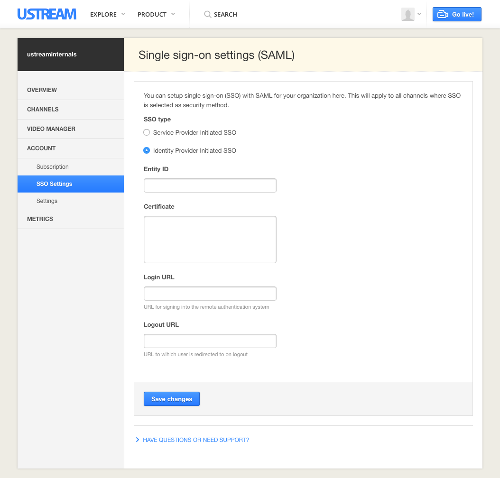
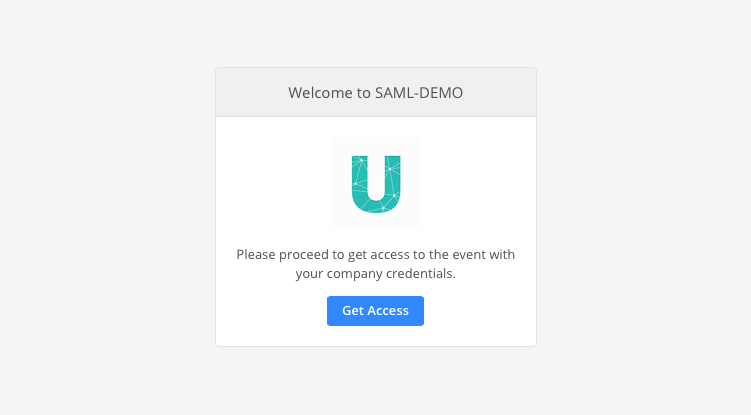

Introduction
Ustream’s SAML based SSO capability for Ustream Align is based on SAML 2.0 - Security Assertion Markup Language.
The basic way that SAML works is in the exchange between an identity provider (IdP) and a service provider (SP). In this case the service provider is Ustream.
An identity provider is a service that a company uses to manage the access of their employees to other third party services. Popular identity providers include OneLogin and Okta. Traditionally, companies used employee directories to manage access to on-premise resources. Two of the most common directories used are LDAP and Microsoft Active Directory. These older systems are not based on the SAML standard, but most of the newer identity providers are.
This guide contains information about how to connect a SAML 2.0 compliant identity provider to Ustream’s SAML based SSO functionality.
Identity Provider Settings
You need to set up Ustream as a service provider within your identity provider. Use the following settings to set up Ustream as a service provider.
Depending on your identity provider, these fields may be labelled differently, so consult the documentation for your identity provider to understand where to copy each URL.
Login URL
- This should be the page URL where you would like to allow your users to authenticate, either the Ustream channel page or the page where you have embedded the Ustream player.
- The URL is https://align.ustream.tv/channel/[YOUR CHANNEL ID]
SAML Assertion Consumer Service URL (ACS)
SAML Audience (this is the Ustream service’s Entity ID)
SAML Single Logout URL (SLO)
SAML User Profile Attributes
Ustream requires the email address is provided.
First and Last name are also recommended for easier identification of your users within the Ustream dashboard.
Ustream SAML SSO Settings
You can choose between SP initiated SSO or IdP initiated SSO.
In IdP initiated SSO the federation process is initiated by the IdP sending an unsolicited SAML Response to the SP. In SP-Init, the SP generates an AuthnRequest that is sent to the IDP as the first step in the Federation process and the IDP then responds with a SAML Response. Consult your IdP to determine the appropriate setting here.
To connect your IdP with Ustream, you need to provide your IdP’s credentials under the Account menu on the Ustream Dashboard:
https://www.ustream.tv/dashboard/account/sso-settings
There are 4 fields in the Ustream dashboard SSO Settings you need to populate with the information from your IdP:
- Entity ID of your IdP
- Certificate
- Login URL
- Logout URL - optional
Viewer Registration Flow
Viewer starts on viewing page
In this scenario, you viewer is not yet authenticated with your identity provider. You share with your viewers the URL where they will watch the Ustream content. This can either be your Ustream Align channel page, or the page where you have embedded the Ustream player. This should be the same URL that you entered in your identity provider’s settings as the Login URL.
When your viewers arrive on the page, they will see the prompt to login to their company account.
Pressing the Get Access button opens your identity provider’s login page in a popup.
If the viewer successfully authenticates at your identity provider, the popup closes and the viewer can access to the content.
Viewer starts at Identity Provider Page
In this scenario, the viewer starts on a URL for your identity provider.
The viewer clicks on a link to access the Ustream viewing page. Since they were already authenticated at your identity provider, they will have immediate access to the Ustream content when they arrive on the viewing page and will not see the prompt to authenticate.